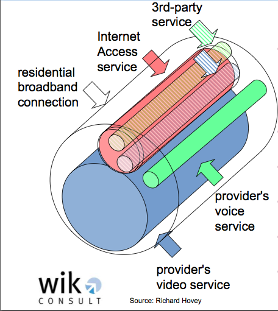

The conceptual foundations and the economics network neutrality [Part 1] - 14 May 2009, Rome
http://www.fub.it/events/seminari/neutralitadellareteeaspettisocioeconomici
Neutrality – “Economy is dematerializing”
Solicited by a Facebook message sent to all the members of the nnsquad.it – for a neutral Internet members on 6 May 2009, I stumbled upon this interesting event I had the occasion to participate, held in the 17th century Rospigliosi palace in the heart of Rome.

In this photo: Kenneth Carter and Stefano Quintarelli
The preface looked pretty good: technicians, Ph.Ds, telco spokesmen and politicians speaking about the internet, its inborn freedom, and how to cope with this in a society where security measures are constantly increasing, and as such contrast in a virtual world with no barriers whatsoever. Furthermore, it’s a virtual arena in which everything can be free, not only information, and people is becoming accustomed to it.
The first speech was held by prof. Kenneth Carter, directly from the columbia university, and served as a broad introduction about the matters that were explored (and sometimes repeated) through the day. In a nutshell, the big question is: might ISPs offer different degrees of performance over different sites (or charge for better performances), permit/block/surcharge access to certain sites or via certain devices?
Filtering access to network services is a common practice over the internet, as is filtering content, and not necessarily bad: think about spam filters to prevent UCE and NAP filters to prevent and mitigate DDOS attacks, or antivirii/IDS [systems]. Also tiered service plans, where you get lower latency or wider upload bandwidth if you pay more, are acceptable, because “quality of service” isn’t an absolute value: it depends by the kind of services the user uses. And in the majority of cases, he/she doesn’t grasp (or even need to) the concepts behind them.
But what happens when the ISP crosses the line, and starts blocking your VPN software, or your VoIP PBX, or puts you into a big metropolitan network making your boxes inaccessible from the internet, and having you to pay lots of money to buy a public IP address (and for 10 days at most)? Hey, IPv4 addresses shortage is on the way, ok, but there are still lots available, and using legacy IPTV subnets to address residential customers isn’t a smart solution on the long run.
Next generation networks aim to solve addressing issues via IPv6, and its 128bits-wide network addresses, and bandwidth/latency ones, via (fiber) separated pipes, all dedicated to different kinds of data, e.g. VoIP/IPTV: this is what is going to be called “Fractionalized IP”.

As long as competition remains in place, applying surcharges for guaranteed QoS/bandwidth on certain services is a practice that can actually enhance user experience: gamers have entirely different expectations than “e-mailers”, and the formers will willingly pay more for Fast-path DSLs to pwn their friends, while geeks enjoy a static IP address to reach their server at home while they’re on the go. Partitioning resources on user demand can make a more profitable and efficient use of them, as long as it is done wisely and transparently to users. When transparency fails, you get the backlash that Comcast received when it started blocking file-sharing software. In Italy as well a provider known for his harassing phone calls to potential customers currently implements layer7 filtering to block file sharing and to “overbook” its limited bandwidth, thus giving a clumsy service to its users.
The key point, in my opinion, is about tech savvyness failure: no one here understands anything about a media (and its infrastructure) that’s becoming, faster than everything in history, overwhelmingly relevant in everyday life.
Wisely, Prof. Carter identified neutrality issues as the classic problem of the elephant and the blind men: each side of the problem can be tackled from a completely different perspective, bringing to completely different analyses and possible solutions. He made distinctions between vertical conflicts (ISP vs. user), horizontal ones (user vs. user / ISP vs. ISP) and diagonal ones (user on ISP A affects ISP B, and so on).
Applause for Mr. Carter, leaving the stage to Stefano Quintarelli from nnsquad.it. He identified in its presentation five key points upon which build a «neutral Internet without absurd restrictions»:
- Transparency: the ISP must give the customer precise statements about its politics of traffic regulation/filtering;
- Free choice: whenever the ISP changes its regulations, the user must have the right to be informed and keep the former ones he subscribed to;
- Privacy: the ISP cannot discriminate traffic by looking at packet payloads;
- ISPs cannot discriminate traffic on a per-user basis
- Whenever an ISP applies traffic discrimination sanctioned in the user agreement, the same treatment must be applied to traffic coming from other networks. Failing to apply this principle is an example of the diagonal conflict stated by prof. Carter.
Furthermore, as often happens in big corporations, technology innovation is stopped by possibly uncertain ROIs: Stefano talked about a MESH network project in Assisi, where a self-healing wireless network has an aggregate bandwidth equal to the sum of the nodes’ ones. Big companies have got standard technologies and big infrastructures, but that doesn’t mean small companies lead by visionary people cannot compete with them. And here the next topic begins, with a speech held by Franco Menaglia from the Bordoni foundation
Economics
The Bordoni foundation `acts_as_consultant` for the Italian public administration regarding ICT matters. Dott. Menaglia recognizes that it’s a very complicated and actual debate, mainly because it’s not a simple opinion exchange between technology and market, but because on this matter depend investments of millions of public Euros. Not to forget that ICT is one of the main keys of UE development, that happens via innovative applications and services.
“Neutrality cannot prescind from economic development”, he states, and to ask users to pay more to have better services, users must actually feel the service quality is improved, and to deliver more data rapidly we need a more powerful infrastructure. Who’s gonna pay it? ISPs for sure, but also content providers could make their part (e.g. google).
The key here is all about business models: advertising is dying, and not because of AdBlock Plus, but because comportamental patterns have changed, and, in my opinion, SPAM and phishing play a major role here in making the user feel unconfortable and reluctant to accept offers on some random internet web site. So we need to find more profitable and efficient business models, thinking about the internet as an ecosystem, trying not to push only on our own company, and improving both competitivity and facilitation innovation through interoperability.
In a nutshell, there wasn’t much content neither in the presentation nor in the discussion, because, as Google CEO stated when commenting the 2009 Q1 report in the context of the world financial crisis, we’re in an un-chartered territory. I think that smart people will win in the end, because they’ll invent the next generation service that doesn’t need either low latency or high bandwidth and will be extremely useful to its users. Something capable to reach 200M of users in few years (and more) and being also profitable, without resorting to advertising.
In the second part of this article, I’ll recap about the afternoon session: it started with the interesting technical speech on new generation networks by Vittorio Trecordi and open discussion with five telcos spokesmen (telecom, tre, vodafone, fastweb and wind).
Stay tuned.
UPDATE May 17, 2009: The second part is available: http://sindro.me/2009/5/16/the-conceptual-foundations-and-the-economics-network-neutrality-part-2


About this entry
You’re currently reading “The conceptual foundations and the economics network neutrality [Part 1] - 14 May 2009, Rome”, an entry on sindro.me
- Published:
- 05.16.09 / 02AM
- Updated:
- 06.04.09 / 18PM
- Sections:
- politics
- Tags: